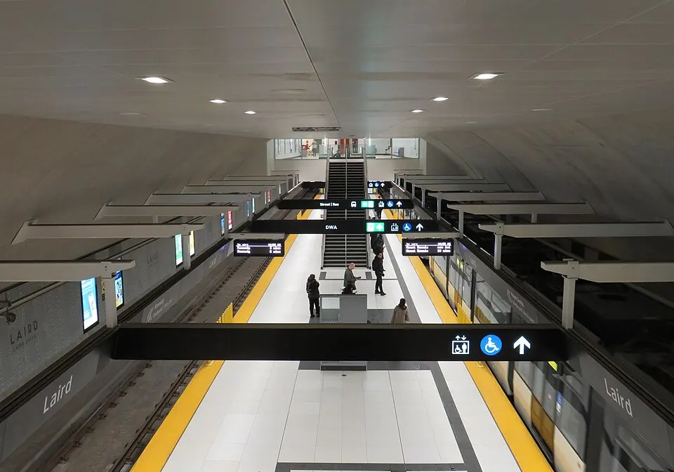

Signal
SignalStation atlas / Laird
Station history
Laird


Station history
The last train-control signal installed on the Crosstown went in at Laird.
Laird Drive gained an underground station with special trackwork to reverse trains or hold a train clear of the running tracks.